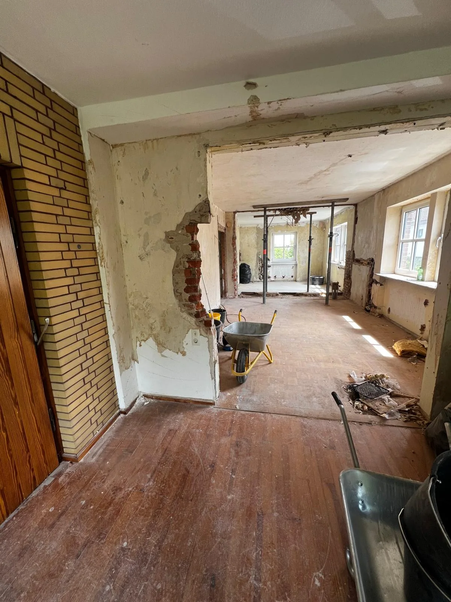
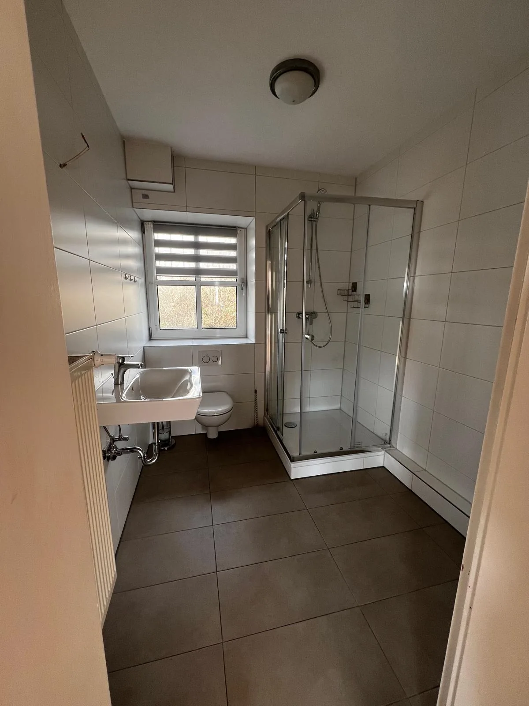
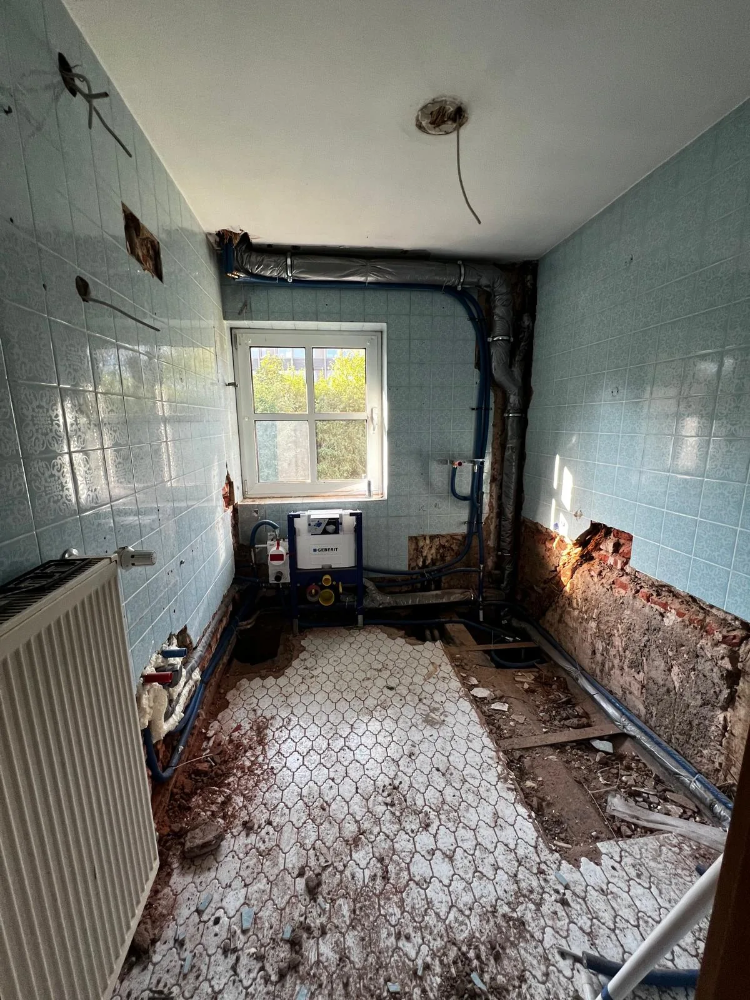
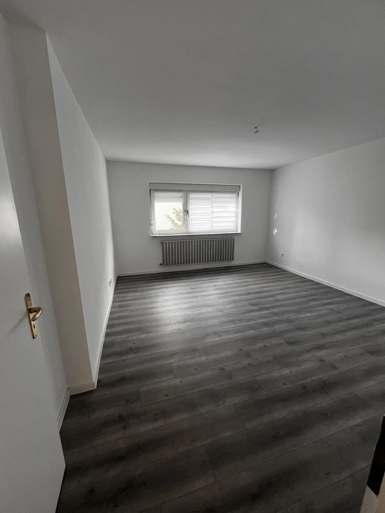
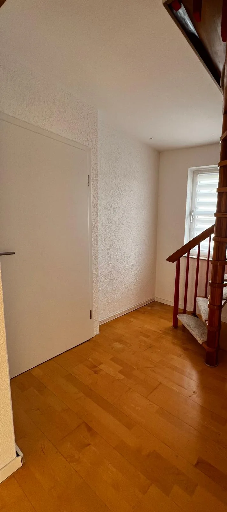
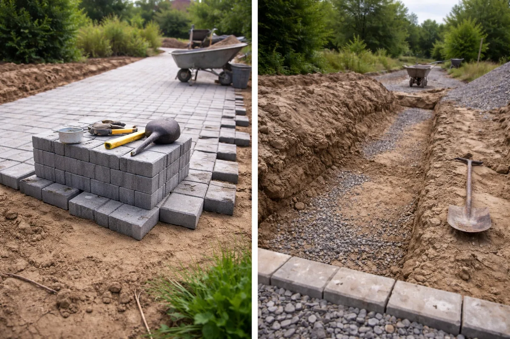
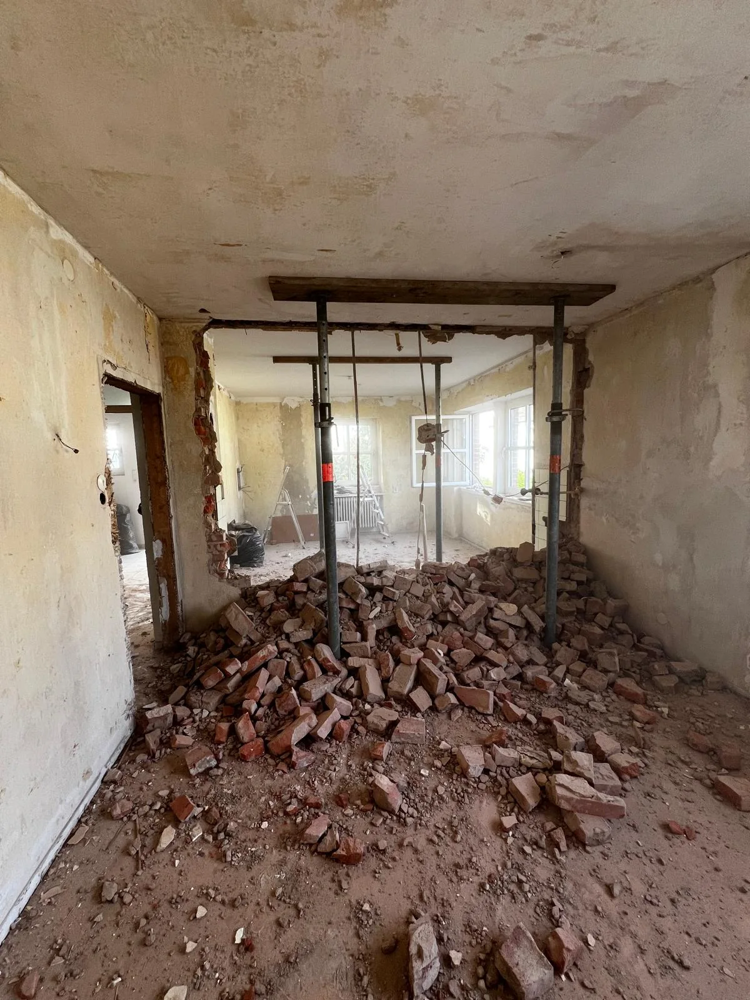

01
Innenausbau & Modernisierung
Aus vorhandenen Räumen mehr machen. Mit Trockenbau, Bodenbelägen und durchdachten Lösungen für Ihren Wohn- oder Arbeitsbereich.
Vorhaben besprechen
Goldbach · Aschaffenburg · Umgebung
Innenausbau, Modernisierung und Montage.
Mit klarem Blick für Ihr Projekt – und einem hohen Anspruch an unsere Arbeit.
Ihr Projekt.
Unser Handwerk.
Ein Ansprechpartner.
Von der Idee zur Umsetzung.
In der Region zu Hause.
Rund 50 km um Aschaffenburg.
Privat oder gewerblich.
Passend zu Ihrem Vorhaben.
01 / Was wir für Sie tun
Ob ein einzelner Raum oder ein größeres Vorhaben: Wir verbinden praktische Lösungen mit sauberer Ausführung und klaren Absprachen.
Aus vorhandenen Räumen mehr machen. Mit Trockenbau, Bodenbelägen und durchdachten Lösungen für Ihren Wohn- oder Arbeitsbereich.
Vorhaben besprechenBestehendes weiterdenken: Wir begleiten die Erneuerung Ihrer Räume und stimmen die einzelnen Arbeitsschritte aufeinander ab.
Vorhaben besprechenFenster, Türen und weitere Bauelemente. Wir übernehmen Montage- und Anpassungsarbeiten passend zu Ihrem Vorhaben.
Vorhaben besprechenWege, Flächen und Zugänge neu gestalten. Mit vorbereitenden Arbeiten und Lösungen für eine stimmige Außenanlage.
Vorhaben besprechenLeitungswege, Leerrohre, Schlitze und Durchführungen: Wir schaffen die Voraussetzungen für die nachfolgenden Fachgewerke.
Vorhaben besprechenKlare Absprachen und abgestimmte Abläufe. Bei Bedarf arbeiten wir mit qualifizierten Meister- und Fachbetrieben zusammen.
Vorhaben besprechenErforderliche Fachgewerke werden in Zusammenarbeit mit qualifizierten Meister- und Fachbetrieben ausgeführt. Umfang und Zuständigkeiten stimmen wir für jedes Projekt ab.
02 / Unsere Arbeit
Einblicke in Ausbau, Sanierung und Montage. Entdecken Sie mit dem Regler, was sich zwischen vorher und nachher verändert hat.

VorherNachherInnenausbau · Raumgestaltung · Bodenbeläge


VorherNachherBadsanierung · Umsetzung mit Fachgewerken

Innenausbau

Montage & Umbau
Fenster & Anpassungsarbeiten

Außenanlagen

03 / Das ist CU MainWerk
Wir sind CU MainWerk – Demirel & Er GbR aus Goldbach. Wir begleiten private und gewerbliche Bauvorhaben im Raum Aschaffenburg: direkt, strukturiert und mit Blick für das Ganze.
Für uns zählt nicht nur das Ergebnis. Auch der Weg dorthin soll stimmen: mit verständlichen Absprachen, einem ordentlichen Arbeitsumfeld und Lösungen, die zu Ihrem Projekt passen.
04 / Von der Idee zum Ergebnis
Sie erzählen uns, was Sie vorhaben. Gemeinsam klären wir, wie daraus ein stimmiges Projekt wird.
Was möchten Sie verändern? Schicken Sie uns die ersten Informationen zu Ihrem Projekt und dem Standort.
Wir klären Umfang und Machbarkeit, stimmen die nächsten Schritte ab und besprechen das passende Angebot.
Wir koordinieren die vereinbarten Arbeiten und halten Sie über den Projektfortschritt auf dem Laufenden.
05 / Ihr nächster Schritt
Ein neuer Raum. Ein frischer Anfang.
Oder eine Idee, die endlich Wirklichkeit werden soll. Erzählen Sie uns davon.
Goldbach & Raum AschaffenburgCa. 50 km Umkreis · Weitere Orte auf Anfrage
Erzählen Sie uns von Ihrem Projekt.
Mit * markierte Angaben benötigen wir für Ihre Anfrage.
Gut zu wissen
Unser Standort ist Goldbach. Wir arbeiten in Aschaffenburg und Umgebung, in der Regel in einem Umkreis von etwa 50 km. Weiter entfernte Projekte besprechen wir gerne auf Anfrage.
Beschreiben Sie uns Ihr Vorhaben – auch einzelne Montage-, Ausbau- oder Modernisierungsarbeiten können zu unserem Leistungsumfang passen. Wir klären mit Ihnen, was möglich ist.
Nutzen Sie das Kontaktformular oder schreiben Sie uns eine E-Mail mit Ort, Umfang und gewünschtem Zeitraum. Wir melden uns, um Details und die nächsten Schritte zu besprechen.
Arbeiten, die entsprechende Qualifikationen erfordern, erfolgen in Zusammenarbeit mit geeigneten Meister- und Fachbetrieben. Zuständigkeiten und Leistungsumfang werden vorab abgestimmt.
{kind=link}
{kind=link}
{kind=link}
{kind=link}